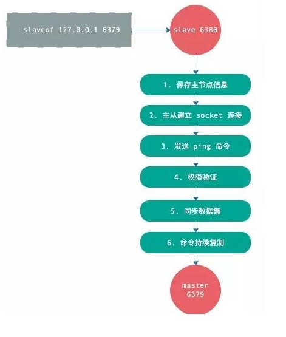
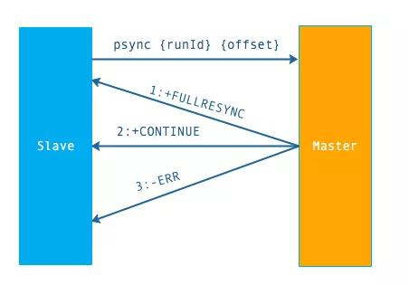
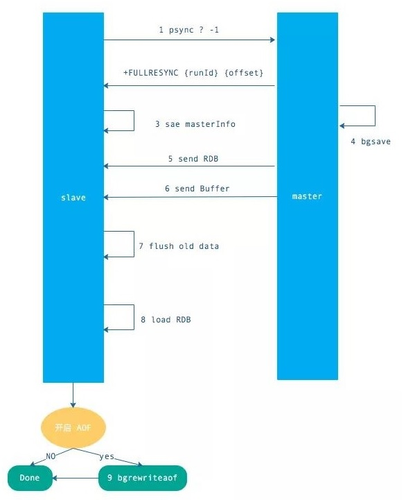
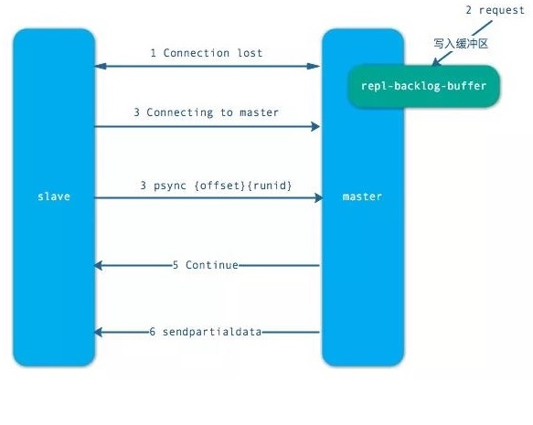
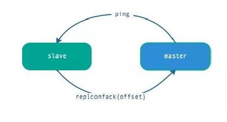
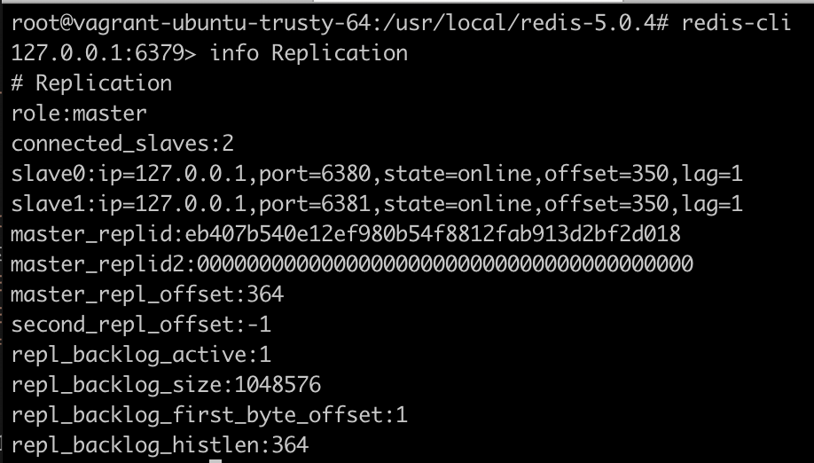
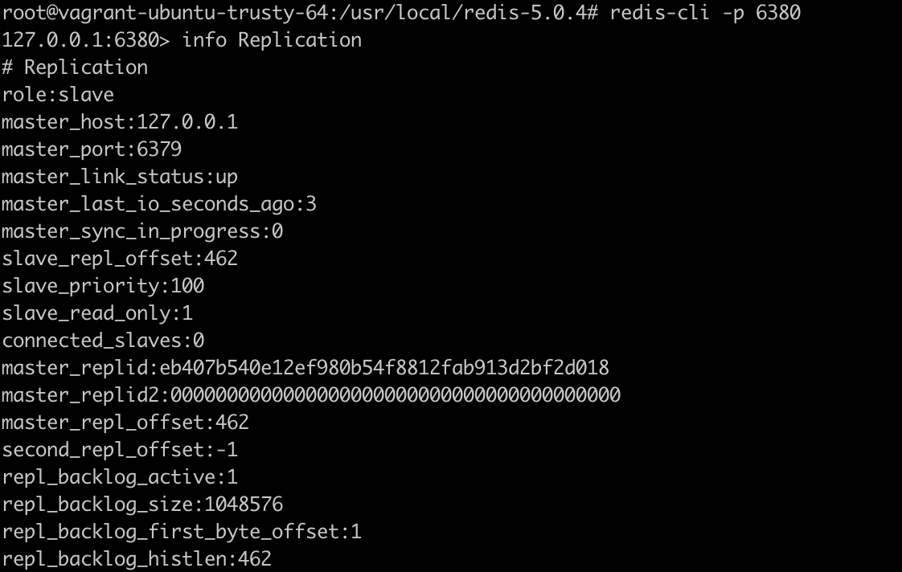
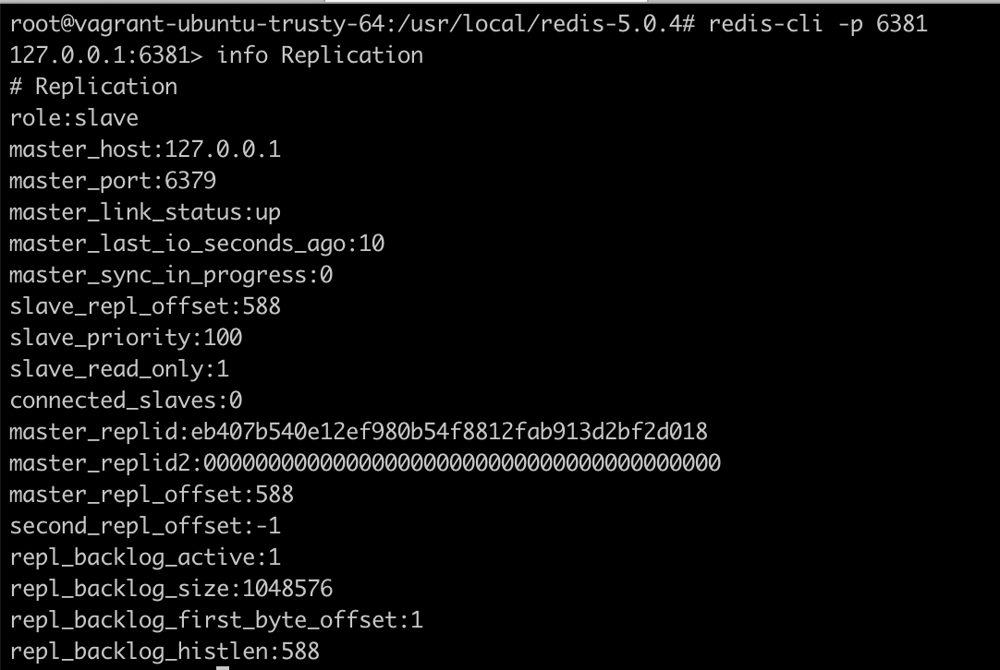
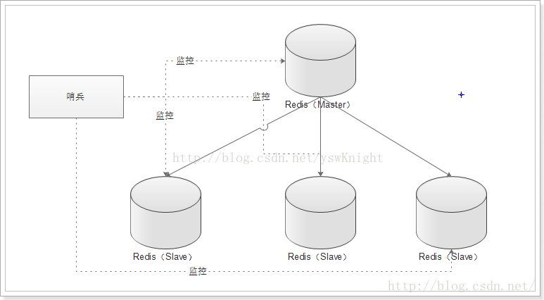

艾伦·麦席森·图灵(Alan Mathison Turing，1912年6月23日—1954年6月7日)，英国数学家、逻辑学家，被称为计算机科学之父，人工智能之父。
主从复制
一、概念
- 主从复制是指将一台Redis服务器的数据，复制到其他的Redis服务器。前者称为主节点(master)，后者称为从节点(slave)，数据的复制是单向的，只能由主节点到从节点。
- 默认情况下每台Redis服务器都是主节点，且一个主节点可以有多个从节点(或没有从节点)，但一个从节点只能有一个主节点。
二、作用
- 数据备份：主从复制实现了数据的热备份，是持久化之外的一种数据冗余方式。
- 故障恢复：当主节点出现问题时，可以由从节点提供服务，实现快速的故障恢复。
- 负载均衡：在主从复制的基础上，配合读写分离，可以由主节点提供写服务，由从节点提供读服务，分担服务器负载。
- 读写分离：可以用于实现读写分离，主库写、从库读，读写分离不仅可以提高服务器的负载能力，同时可根据需求的变化，改变从库的数量。
- 高可用基石：主从复制还是哨兵和集群能够实施的基础。
三、复制过程

- 从节点执行slaveof/replicaof(根据版本情况而定)命令。
- 从节点只是保存了slaveof/replicaof命令中主节点的信息，并没有立即发起复制。
- 从节点内部的定时任务发现有主节点的信息，开始使用socket连接主节点。
- 连接建立成功后，发送ping命令，希望得到pong命令响应，否则会进行重连。
- 如果主节点设置了权限，那么就需要进行权限验证，如果验证失败，复制终止。
- 权限验证通过后，进行数据同步，这是耗时最长的操作，主节点将把所有的数据全部发送给从节点。
- 当主节点把当前的数据同步给从节点后，便完成了复制的建立流程。接下来主节点就会持续的把写命令发送给从节点，保证主从数据一致性。
1 | 当一个Redis服务器接收到replicaof命令，开始对另一个服务器进行复制的时候，主从服务器会执行以下操作： |
因为主服务器存储的写命令都是在执行bgsave命令之后执行的，所以当从服务器载入完rdb文件，并执行完主服务器存储在缓冲区中的所有写命令之后，主从服务器包含的数据库数据将完全相同。
这个通过创建、传送并载入rdb文件来达成数据一致的步骤，我们称之为完整同步操作。
每个从服务器在刚开始进行复制的时候，都需要与主服务器进行一次完整同步。
四、sync和psync
redis同步有2个命令：sync和psync，前者是redis 2.8之前的同步命令，只能执行全量同步，后者是redis2.8为了优化sync新设计的命令，同时支持全量同步和部分同步。
psync命令需要3个组件支持：
- 主从节点各自复制偏移量
- 主节点复制积压缓冲区
- 主节点运行ID
主从节点各自复制偏移量：
- 参与复制的主从节点都会维护自身的复制偏移量。
- 主节点在处理完写入命令后，会把命令的字节长度做累加记录，统计信息在info replication中的masterreploffset指标中。
- 从节点每秒钟上报自身的的复制偏移量给主节点，因此主节点也会保存从节点的复制偏移量。
- 从节点在接收到主节点发送的命令后，也会累加自身的偏移量，统计信息在info replication中。
- 通过对比主从节点的复制偏移量，可以判断主从节点数据是否一致。
主节点复制积压缓冲区：
- 复制积压缓冲区是一个保存在主节点的一个固定长度的先进先出的队列，默认大小1MB。
- 这个队列在slave连接是创建。这时主节点响应写命令时，不但会把命令发送给从节点，也会写入复制缓冲区。
- 他的作用就是用于部分复制和复制命令丢失的数据补救。通过info replication可以看到相关信息。
主节点运行ID：
- 每个redis 启动的时候，都会生成一个40位的运行ID
- 运行 ID 的主要作用是用来识别Redis节点。如果使用ip+port的方式，那么如果主节点重启修改了RDB/AOF数据，从节点再基于偏移量进行复制将是不安全的。所以，当运行id变化后，从节点将进行全量复制。也就是说，redis重启后，默认从节点会进行全量复制。
如何在重启时不改变运行 ID 呢？
可以通过debug reload命令重新加载RDB并保持运行ID不变，从而有效的避免不必要的全量复制。缺点是：debug reload命令会阻塞当前Redis节点主线程，因此对于大数据量的主节点或者无法容忍阻塞的节点，需要谨慎使用。
一般通过故障转移机制可以解决这个问题。
- psync 命令的使用方式：
psync{runId}{offset}- runId：从节点所复制主节点的运行id
- offset：当前从节点已复制的数据偏移量
- psync执行流程
- 从节点发送 psync 命令给主节点，runId 就是目标主节点的 ID，如果没有默认为 -1，offset 是从节点保存的复制偏移量，如果是第一次复制则为 -1.
- 主节点会根据runid和offset决定返回结果：
- 如果回复
+FULLRESYNC {runId} {offset}，那么从节点将触发全量复制流程。 - 如果回复
+CONTINUE，从节点将触发部分复制。 - 如果回复
+ERR，说明主节点不支持2.8的psync命令，将使用sync执行全量复制。
- 如果回复
五、全量复制
全量复制是 Redis 最早支持的复制方式，也是主从第一次建立复制时必须经历的的阶段。触发全量复制的命令是 sync 和 psync。之前说过，这两个命令的分水岭版本是 2.8，redis 2.8 之前使用 sync 只能执行全量不同，2.8 之后同时支持全量同步和部分同步。

- 发送psync命令（spync ？ -1）
- 主节点根据命令返回FULLRESYNC
- 从节点记录主节点ID 和offset
- 主节点bgsave并保存RDB到本地
- 主节点发送RBD文件到从节点
- 从节点收到RDB文件并加载到内存中
- 主节点在从节点接受数据的期间，将新数据保存到“复制客户端缓冲区”，当从节点加载RDB完毕，再发送过去
- 如果从节点花费时间过长，将导致缓冲区溢出，最后全量同步失败
- 从节点清空数据后加载RDB文件，如果RDB文件很大这一步操作仍然耗时，如果此时客户端访问将导致数据不一致
- 可以使用配置slave-server-stale-data关闭
- 从节点成功加载完RBD后，如果开启了AOF，会立刻做bgrewriteaof。
如过 RDB 文件大于 6GB，并且是千兆网卡，Redis 的默认超时机制（60 秒），会导致全量复制失败。可以通过调大 repl-timeout 参数来解决此问题。
Redis 虽然支持无盘复制，即直接通过网络发送给从节点，但功能不是很完善，生产环境慎用。
六、部分复制
当从节点正在复制主节点时，如果出现网络闪断和其他异常，从节点会让主节点补发丢失的命令数据，主节点只需要将复制缓冲区的数据发送到从节点就能够保证数据的一致性，相比较全量复制，成本小很多。

- 当从节点出现网络中断，超过了repl-timeout时间，主节点就会中断复制连接。
- 主节点会将请求的数据写入到”复制积压缓冲区”，默认1MB。
- 当从节点恢复，重新连接上主节点，从节点会将offset和主节点id发送到主节点。
- 主节点校验后，如果偏移量的数后的数据在缓冲区中，就发送continue响应(表示可以进行部分复制)。
- 主节点将缓冲区的数据发送到从节点，保证主从复制进行正常状态。
七、心跳

- 中从都有心跳检测机制，各自模拟成对方的客户端进行通信，通过 client list 命令查看复制相关客户端信息，主节点的连接状态为 flags = M，从节点的连接状态是 flags = S。
- 主节点默认每隔 10 秒对从节点发送 ping 命令，可修改配置 repl-ping-slave-period 控制发送频率。
- 从节点在主线程每隔一秒发送 replconf ack{offset} 命令，给主节点上报自身当前的复制偏移量。
- 主节点收到 replconf 信息后，判断从节点超时时间，如果超过 repl-timeout 60 秒，则判断节点下线。
为了降低主从延迟，一般把 redis 主从节点部署在相同的机房/同城机房，避免网络延迟带来的网络分区造成的心跳中断等情况。
八、异步复制
主节点不但负责数据读写，还负责把写命令同步给从节点，写命令的发送过程是异步完成，也就是说主节点处理完写命令后立即返回客户度，并不等待从节点复制完成。

- 主节点接受处理命令。
- 主节点处理完后返回响应结果 。
- 对于修改命令，异步发送给从节点，从节点在主线程中执行复制的命令。
九、参考
假设已经安装了redis-server,安装目录/usr/local/redis-5.0.4，本文通过同一台服务器不同端口实现redis主从，master节点bind 127.0.0.1
切换到安装目录
cd /usr/local/redis-5.0.4复制
redis.conf为6380.conf和6381.confcp redis.conf 6380.confcp redis.conf 6381.conf分别修改
6380.conf和6381.conf如下1
2
3
4
5
6port 6380|6381
slaveof 127.0.0.1 6379
daemonize yes
pidfile /var/run/redis_6380|6381.pid
logfile "6380|6381.log"
dbfilename dump6380|6381.rdb分别启动三个节点
1
2
3redis-server 6379.conf
redis-server 6380.conf
redis-server 6381.conf查看主从节点信息
- 6379

- 6380

- 6381

测试主从复制
1
2
3
4
5
6
7
8
9
10
11## 在master节点设置name
redis-cli
set name master-node-name
## 在6380节点获取name
redis-cli -p 6380
get name
## 在6381节点获取name
redis-cli -p 6381
get name
开启主从有三种方式，一般推荐配置文件方式
配置文件方式，即上面的那种
启动server时指定
./redis-server 6380.conf --replicaof 127.0.0.1 6379- 如果主节点设置了requirepass则须指定
--masterauth 123456 --replicaof(5.0.0+)和--slaveof(<5.0.0)一样，不同版本的产物
- 如果主节点设置了requirepass则须指定
启动server后通过客户端命令slaveof指定
./redis-server 6380.conf./redis-cli -p 6380slaveof 127.0.0.1 6379，此命令无法输入主节点的password，执行后查看从节点复制状态info replication，可看到master_link_status:down是down状态1
2
3
4
5
6
7
8
9
10
11
12
13
14
15
16
17
18
19
20# Replication
role:slave
master_host:127.0.0.1
master_port:6379
master_link_status:down
master_last_io_seconds_ago:-1
master_sync_in_progress:0
slave_repl_offset:1
master_link_down_since_seconds:1617335714
slave_priority:100
slave_read_only:1
connected_slaves:0
master_replid:243a71fda37bb8d32ed300368a73305c78984c39
master_replid2:0000000000000000000000000000000000000000
master_repl_offset:0
second_repl_offset:-1
repl_backlog_active:0
repl_backlog_size:1048576
repl_backlog_first_byte_offset:0
repl_backlog_histlen:0
三、参考
哨兵机制
一、概念
Redis Sentinel是一个分布式系统，你可以在一个架构中运行多个 Sentinel进程(progress)，这些进程使用流言协议(gossip protocols)来接收关于主服务器是否下线的信息，并使用投票协议(agreement protocols)来决定是否执行自动故障迁移，以及选择哪个从服务器作为新的主服务器。

二、作用
该系统执行以下三个任务：
- 监控(
Monitoring)：Sentinel会不断地检查你的务器和从服务器是否运作正常。 - 提醒(
Notification)：当被监控的某个Redis服出现问题时，Sentinel可以通过API向管理员或者应用程序发送通知。 - 自动故障迁移(
Automatic failover)：当一个主器不能正常工作时，Sentinel会开始一次自动故障迁作，它会将失效主服务器的其中一个从服务器升级为新服务器，并让失效主服务器的其他从服务器改为复制新服务器；当客户端试图连接失效的主服务器时，集群向客户端返回新主服务器的地址，使得集群可以使用新务器代替失效服务器。
三、工作方式
- 每个
Sentinel以每秒钟一次的频率向它所知的主服务器、从服务器以及其他Sentinel实例发送一个PING命令。 - 如果一个实例(
instance)距离最后一次有效回复PING命令的时间超过down-after-milliseconds选项所指定的值，那么这个实例会被Sentinel标记为主观下线。一个有效回复可以是：+PONG、-LOADING或者-MASTERDOWN。 - 如果一个主服务器被标记为主观下线，那么正在监视这个主服务器的所有
Sentinel要以每秒一次的频率确认主服务器的确进入了主观下线状态。 - 如果一个主服务器被标记为主观下线， 并且有足够数量的
Sentinel(至少要达到配置文件指定的数量)在指定的时间范围内同意这一判断，那么这个主服务器被标记为客观下线。 - 在一般情况下，每个
Sentinel会以每10秒一次的频率向它已知的所有主服务器和从服务器发送INFO命令。当一个主服务器被Sentinel标记为客观下线时，Sentinel向下线主服务器的所有从服务器发送INFO命令的频率会从10秒一次改为每1秒一次。 - 当没有足够数量的
Sentinel同意主服务器已经下线，主服务器的客观下线状态就会被移除。当主服务器重新向Sentinel的PING命令返回有效回复时，主服务器的主观下线状态就会被移除。
四、其他概念
- 主观下线(
Subjectively Down，简称SDOWN)指的是单个Sentinel实例对服务器做出的下线判断。 - 客观下线(
Objectively Down，简称ODOWN)指的是多个Sentinel实例在对同一个服务器做出SDOWN判断，并且通过SENTINEL is-master-down-by-addr命令互相交流之后，得出的服务器下线判断。(一个Sentinel可以通过向另一个Sentinel发送SENTINEL is-master-down-by-addr命令来询问对方是否认为给定的服务器已下线。)
五、实现方式
- 编辑sentinel.conf文件
sentinel monitor mymaster 127.0.0.1 6379 1sentinel monitor 名称 ip 端口 投票次数)
- 启动哨兵节点
redis-sentinel sentinel.conf- 因为是通过单机不同端口测试，启动了一个哨兵节点，故步骤1投票次数设置为1，设置过大则不起作用
shutdown主节点服务或kill掉主节点进程ID- 观察步骤2输出信息，并通过
info replication查看节点角色
集群
一、概念
所谓集群，就是一组相互独立的、通过高速网络互联的计算机，它们构成了一个组，并以单一系统的模式加以管理。通俗的说就是，多台物理计算机组成逻辑上的一台计算机以提升系统负载能力，对于用户来说是无感知的，Redis集群道理也是一样的。由于Redis是基于内存的高速缓存数据库，而单台实例的内存终归是有限的，一般都要引入Redis集群。
Redis集群是一个提供在多个Redis间节点间共享数据的程序集。
Redis集群没有使用一致性hash, 而是引入了哈希槽的概念。Redis集群有16384个哈希槽，每个key通过CRC16校验后对16384取模来决定放置哪个槽，集群的每个节点负责一部分hash槽。举个例子，比如当前集群有3个节点，那么:
- 节点A包含 0 到 5500号哈希槽.
- 节点B包含5501 到 11000 号哈希槽.
- 节点C包含11001 到 16384号哈希槽.
这种结构很容易添加或者删除节点. 比如如果我想新添加个节点D, 我需要从节点 A, B, C中得部分槽到D上. 如果我想移除节点A,需要将A中的槽移到B和C节点上,然后将没有任何槽的A节点从集群中移除即可. 由于从一个节点将哈希槽移动到另一个节点并不会停止服务,所以无论添加删除或者改变某个节点的哈希槽的数量都不会造成集群不可用的状态.
为了使在部分节点失败或者大部分节点无法通信的情况下集群仍然可用，所以集群使用了主从复制模型,每个节点都会有N-1个复制品.在我们例子中具有A，B，C三个节点的集群,在没有复制模型的情况下,如果节点B失败了，那么整个集群就会以为缺少5501-11000这个范围的槽而不可用.然而如果在集群创建的时候（或者过一段时间）我们为每个节点添加一个从节点A1，B1，C1,那么整个集群便有三个master节点和三个slave节点组成，这样在节点B失败后，集群便会选举B1为新的主节点继续服务，整个集群便不会因为槽找不到而不可用了.不过当B和B1 都失败后，集群是不可用的.
二、分类
- 基于客户端分片
- 基于代理
- 基于原生Redis Cluster
三、实战
手动搭建
- 下载redis源码，安装
- 创建集群目录
mkdir 7000 7001 7002 7003 7004 7005 - 创建配置文件redis.conf，添加以下内容
1
2
3
4
5
6
7
8
9
10
11
12# 端口号，每个目录都不同
port 700X
# 开启集群模式
cluster-enabled yes
#节点超时实际，单位毫秒
cluster-node-timeout 5000
#集群内部配置文件(默认为 nodes.conf)
cluster-config-file nodes.conf
# 启动 AOF
appendonly yes
# 后台运行
daemonize yes- 复制配置文件到每个目录下 cp redis.conf 700X/redis.conf
- 启动每个节点
cd 700x && redis-server redis.conf，会生成appendonly.aof和nodes.conf - 关联所有节点
redis-cli -p 7000，然后依次执行cluster meet 127.0.0.1 7001/2/3/4/5 - 分配slot
1
2
3redis-cli -p 7000 cluster addslots {0..5461}
redis-cli -p 7001 cluster addslots {5462..10922}
redis-cli -p 7002 cluster addslots {10923..16383}- 查看节点状态
redis-cli -p 7000 cluster nodes
1
2
3
4
5
6aaa6ee613e3dcd71b8fed855b21bb024756aee3d 127.0.0.1:7000@17000 myself,master - 0 1566358053000 1 connected 0-5461
bbbecb53837913721b76742f4004ca76c36167c1 127.0.0.1:7001@17001 master - 0 1566358052406 4 connected 5462-10922
43eebc86c309da5d24900b2affa30a62e8c0c5cb 127.0.0.1:7004@17004 master - 0 1566358052000 3 connected
1cd86051e473f5f9527275f816deea3ec224e5e2 127.0.0.1:7002@17002 master - 0 1566358053516 2 connected 10923-16383
b506e1f1ee1919879ca22d589c4ea0ad8ce5f6a1 127.0.0.1:7005@17005 master - 0 1566358052000 0 connected
ccc9a55802e23eb576a69a2f93596e158077cda9 127.0.0.1:7003@17003 master - 0 1566358053415 5 connected- 设置主从复制
1
2
3redis-cli -p 7003 cluster replicate 7000的NodeID(aaa6ee613e3dcd71b8fed855b21bb024756aee3d)
redis-cli -p 7004 cluster replicate 7001的NodeID(bbbecb53837913721b76742f4004ca76c36167c1)
redis-cli -p 7005 cluster replicate 7002的NodeID(ccc9a55802e23eb576a69a2f93596e158077cda9)- 测试
1
2
3
4
5
6
7redis-cli -c -p 7000
set name jack
-> Redirected to slot [5798] located at 127.0.0.1:7001
redis-cli -c -p 7001
get name //jack- -c:集群模式，不加此选项执行set命令时会报错
(error) MOVED 5798 127.0.0.1:700X
- 查看集群信息
cluster infocluster nodes
ruby脚本安装
- 下载redis源码并安装
- 创建集群目录
mkdir 6380 6381 6382 6383 6384 6385 - 创建配置文件redis.conf，添加以下内容
1
2
3
4
5
6
7
8
9
10
11
12# 端口号，每个目录都不同
port 638x
# 开启集群模式
cluster-enabled yes
#节点超时实际，单位毫秒
cluster-node-timeout 5000
#集群内部配置文件(默认为 nodes.conf)
cluster-config-file nodes.conf
# 启动 AOF
appendonly yes
# 后台运行
daemonize yes- 复制配置文件到每个目录下 cp redis.conf 638X/redis.conf
- 启动每个节点
cd 638x && redis-server redis.conf，会生成appendonly.aof和nodes.conf cd src && ./redis-trib.rb create --replicas 1 127.0.0.1:6380 127.0.0.1:6381 127.0.0.1:6382 127.0.0.1:6383 127.0.0.1:6384 127.0.0.1:6385- 报错WARNING: redis-trib.rb is not longer available!
- 根据提示执行
redis-cli --cluster create 127.0.0.1:6380 127.0.0.1:6381 127.0.0.1:6382 127.0.0.1:6383 127.0.0.1:6384 127.0.0.1:6385 --cluster-replicas 1
- 停止服务
$redis-cli -h 127.0.0.1 -p port shutdowns - 查看集群信息
cluster infocluster nodes
四、参考
哈希槽
一、概念
Redis集群中内置了2^14 = 16384个哈希槽，当需要在Redis集群中放置一个 key-value时，Redis先对 key 使用crc16算法算出一个结果，然后把结果对16384取模，这样每个 key 都会对应一个编号在 0-16383 之间的哈希槽，Redis会根据节点数量大致均等的将哈希槽映射到不同的节点。基本思想：
- 一共有16384个槽，每个节点分管其中的一部分
- 插入一个数据的时候，先根据CRC16算法计算key对应的值，然后用该值对16384取余数
(CRC16(key) mod 16384)，确定将数据放到哪个槽里面 - 在增加新节点的时候，其他节点各自分出一些槽给新节点，对应的数据也一起迁出
- 在移除节点的时候，只需要把待移除节点上的槽挪到其他节点就行了
- 客户端可以向任何一个Redis节点发送请求，然后由节点将请求重定向到正确的节点上
为什么要选择的槽是16384个呢？
- Redis的一个节点的心跳信息中需要携带该节点的所有配置信息，而16K大小的槽数量所需要耗费的内存为2K，但如果使用65K个槽，这部分空间将达到8K，心跳信息就会很庞大。
- Redis集群中主节点的数量基本不可能超过1000个。
- Redis主节点的配置信息中，它所负责的哈希槽是通过一张bitmap的形式来保存的，在传输过程中，会对bitmap进行压缩，但是如果bitmap的填充率slots / N很高的话，bitmap的压缩率就很低，所以N表示节点数，如果节点数很少，而哈希槽数量很多的话，bitmap的压缩率就很低。而16K个槽当主节点为1000的时候，是刚好比较合理的，既保证了每个节点有足够的哈希槽，又可以很好的利用bitmap。
- 选取了16384是因为crc16会输出16bit的结果，可以看作是一个分布在0-2^16-1之间的数，redis的作者测试发现这个数对2^14求模的会将key在0-2^14-1之间分布得很均匀，因此选了这个值。
二、例子
假设现在有3个节点已经组成了集群，分别是：A, B, C(它们可以是一台机器上的三个端口，也可以是三台不同的服务器)。采用哈希槽(hash slot)的方式来分配16384个slot后，它们三个节点分别承担的slot区间是：
- 节点A覆盖0－5460
- 节点B覆盖5461－10922
- 节点C覆盖10923－16383
如果将新节点D添加到集群中，则只需要将节点A、B、C中的某些槽移动到节点D就可以了。通常的做法是从各个节点的前面各拿取一部分slot到D上，最后大致就会变成这样：
- 节点A覆盖1365-5460
- 节点B覆盖6827-10922
- 节点C覆盖12288-16383
- 节点D覆盖0-1364,5461-6826,10923-12287
如果用户要从集群中移除节点A，那么集群只需要将节点A中的所有哈希槽移动到节点B和C，然后再移除空白(不包含任何哈希槽)的节点A就可以了，最后大概就会变成这样：
- 节点B覆盖0 - 2820，5461－10922
- 节点C覆盖2821－5460，10923－16383